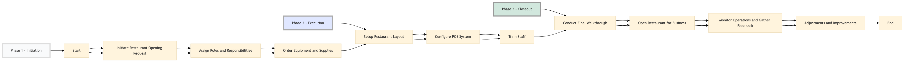

| Role | Steps |
|---|---|
| Food & Beverage Manager | 1.1 1.2 2.2 2.3 3.1 3.2 3.3 3.4 |
| Procurement Manager | 1.3 |
| Executive Housekeeper | 2.1 3.1 |
| IT Manager | 2.2 |
| Head Chef | 2.3 3.4 |
| General Manager | 3.2 |
| Step | Name | Role | System | Input | Output | KPI | Dec? | Exc? | Pain Point / Risk |
|---|---|---|---|---|---|---|---|---|---|
| 1.1 | Initiate Restaurant Opening Request | Food & Beverage Manager | Oracle OPERA Cloud | Restaurant opening request form | Approved restaurant opening plan | Less than 24 hours to approval | Y | N | Delays in obtaining necessary approvals from upper management. |
| 1.2 | Assign Roles and Responsibilities | Food & Beverage Manager | Oracle OPERA Cloud, Workday HCM | Approved restaurant opening plan | Role assignment document | Within 48 hours of approval | N | Y | Ensuring all team members are trained and available for the new setup. |
| 1.3 | Order Equipment and Supplies | Procurement Manager | Birchstreet Procurement, Oracle OPERA Cloud | Equipment list, supply requirements | Purchase order confirmation | Less than 5 business days for delivery | Y | N | Managing inventory levels and ensuring timely delivery. |
| 2.1 | Setup Restaurant Layout | Executive Housekeeper, Facilities Manager | Oracle OPERA Cloud, IBM Maximo | Restaurant floor plan, layout specifications | Completed restaurant setup | Within 3 days of equipment delivery | N | Y | Coordinating with multiple departments for seamless setup. |
| 2.2 | Configure POS System | IT Manager, Food & Beverage Manager | Oracle MICROS Simphony, Oracle OPERA Cloud | POS configuration guidelines | Configured POS system | Within 2 days of layout completion | Y | N | Ensuring the POS system integrates with other hotel systems. |
| 2.3 | Train Staff | Food & Beverage Manager, Head Chef | Oracle OPERA Cloud, Book4Time | Training materials, schedule | Trained staff list | Within 1 week of POS configuration | N | Y | Maintaining high training standards and ensuring all staff are competent. |
| 3.1 | Conduct Final Walkthrough | Food & Beverage Manager, Executive Housekeeper | Oracle OPERA Cloud | Final checklist | Walkthrough completion report | Within 24 hours of training | Y | N | Identifying and addressing any last-minute issues. |
| 3.2 | Open Restaurant for Business | Food & Beverage Manager, General Manager | Oracle OPERA Cloud, IDeaS G3 RMS | Walkthrough completion report | Restaurant opening announcement | Within 1 hour of walkthrough completion | N | Y | Ensuring a smooth transition to live service. |
| 3.3 | Monitor Operations and Gather Feedback | Food & Beverage Manager, Front Desk Agent | Oracle OPERA Cloud, Knowcross HotSOS | Operational data, guest feedback | Operation report, improvement suggestions | Daily monitoring and weekly reporting | Y | N | Continuously improving service based on operational performance. |
| 3.4 | Adjustments and Improvements | Food & Beverage Manager, Head Chef | Oracle OPERA Cloud, Birchstreet Procurement | Operation report, improvement suggestions | Adjusted menu, procurement orders | Within 1 week of initial feedback | Y | N | Balancing operational efficiency with guest satisfaction. |
The process for opening a restaurant and setting up the mise en place at a full-service Marriott hotel involves coordination between various departments to ensure smooth operation.